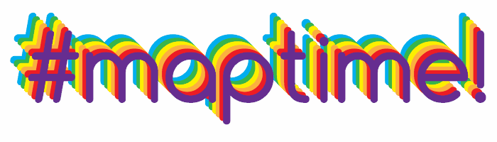

Welcome to Maptime Chicago!
← and → to navigate

PLEASE interrupt if you have questions!
First things first: What is Maptime all about?
- A time for learning about maps
- Hands-on
- Beginner-focused
- Emphasis on open source, programming and web-mapping
Stolen from Lyzi DiamondMaptime is popping up all over the world
Our
mission is to open the doors of cartographic possibility to anyone interested
Maptime
exists because
community,
inclusivity, and
accessibility are important components of
positive learning experiences.
We're even working on an official
Code of Conduct, which you can contribute to.
Our mission
today is:
- Kick off Maptime Chicago
- Talk about what we want to learn together
- Get our hands dirty with OpenStreetMap
Steve Vance, esteemed #ChiHackNight contributor, writer of
Streetsblog Chicago and longtime OpenStreetMap contributor, will get you acquainted with OSM
Then we'll have some open time to edit some maps!
There will also be some sticky notes lying around. Use them to tell us what you'd like to learn next time!
If you'd like to lead a future Maptime, talk to me!
Finally, if you're interested in getting more involved, let's have a discussion around 7:15.